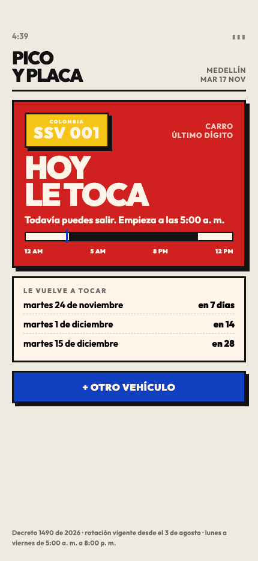
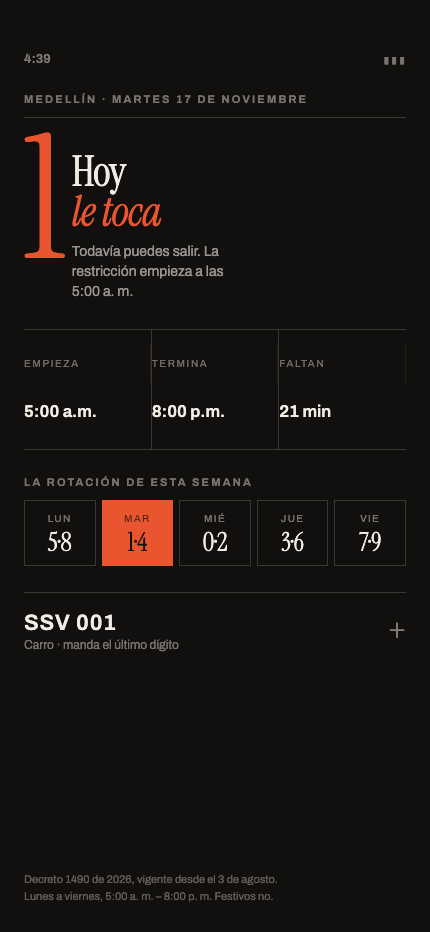
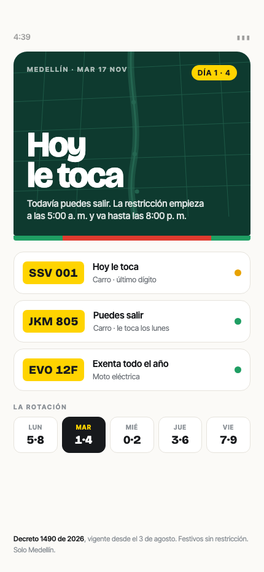

Los tres muestran la misma pantalla, el mismo martes a las 4:39 a. m., con la misma placa. Lo que cambia es el carácter. Dime cuál y lo construyo en la app de verdad; también se pueden mezclar.

Lo que ve el usuario todos los días: su placa amarilla. Bordes duros, sombra sólida, todo en mayúscula.

El dígito que manda, enorme, como portada de revista. Serif con itálica, oscuro de tinta, naranja seco.

Claro, con el valle dibujado de fondo y semáforo por vehículo. El que mejor aguanta tres o cuatro carros.